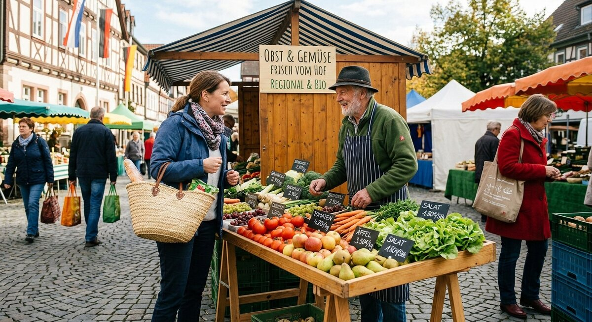

Teil 2 · Bild und Erfahrung
Karte 014
Auf dem Wochenmarkt einkaufen
Ausführliches Übungsmaterial zur Vorder- und Rückseite der Karte.

Ihre Aufgabe
- wer auf dem Bild ist
- wo die Situation stattfindet
- was die Personen machen
- was man dort kaufen kann
- ob Sie selbst lieber auf dem Markt oder im Supermarkt einkaufen
Interaktives Sprechtraining
Mit ChatGPT sprechen üben
Kopiere zuerst die Übungsanweisung. Öffne anschließend die ChatGPT-App oder ChatGPT im Browser, starte den Sprachmodus (Voice Mode) und füge den Prompt in diesen Chat ein.
- Tippe auf „Prompt kopieren“.
- Öffne anschließend die ChatGPT-App oder nutze den Browser-Link.
- Melde dich bei Bedarf an und starte in ChatGPT zuerst den Sprachmodus (Voice Mode).
- Füge den bereits kopierten Prompt in den Chat des Sprachmodus (Voice Mode) ein und sende ihn ab.
- Beginne anschließend die Sprechübung.
- Wenn du die Übung beenden und Feedback bekommen möchtest, sage:
Die Übung ist beendet. Bitte gib mir jetzt Feedback.
Prompt anzeigen oder manuell kopieren
ChatGPT ist ein externer Dienst. Für den Sprachmodus (Voice Mode) musst du dich möglicherweise bei deinem ChatGPT-Konto anmelden und den Zugriff auf das Mikrofon erlauben. Verfügbare Funktionen hängen von deinem Gerät und Konto ab. Die Übung ersetzt keine offizielle Prüfungsbewertung.
Nützliche Satzanfänge
- Auf dem Bild sehe ich …
- Die Szene spielt wahrscheinlich …
- Die Frau kauft gerade …
- Man kann dort …
- Ich persönlich finde …
Modellantwort anhören
Höre zuerst aufmerksam zu. Sprich danach nicht einfach alles nach, sondern bearbeite die Aufgabe mit eigenen Informationen.
Modellantwort
Auf dem Bild sehe ich einen Markt im Freien. Vorne steht eine Frau an einem Verkaufsstand und spricht mit einem Verkäufer. Auf dem Tisch liegen verschiedene Obst- und Gemüsesorten, zum Beispiel Tomaten, Äpfel und vielleicht Salat. Im Hintergrund sind noch andere Kunden zu sehen. Einige tragen Einkaufstaschen, deshalb denke ich, dass sie ihren Wocheneinkauf machen.
Die Situation wirkt freundlich und normal. Auf einem Markt kann man oft frische Produkte kaufen und manchmal auch kurz mit den Leuten sprechen. Das gefällt mir. Bei mir ist es so, dass ich meistens im Supermarkt einkaufe, weil es schneller geht. Aber wenn ich Zeit habe, gehe ich gern auf den Markt, denn dort sind Obst und Gemüse oft frischer.
Mögliche Prüferfragen und Antwortideen
-
Was kaufen Sie oft auf dem Markt?
Antwortidee: Ich kaufe dort gern Obst, Gemüse und manchmal Käse.
-
Ist Einkaufen in Deutschland anders als in Ihrem Heimatland?
Antwortidee: Ja, ein bisschen. In meinem Heimatland spricht man auf dem Markt oft länger mit den Verkäufern.
-
Was ist wichtiger: Preis oder Qualität?
Antwortidee: Beides ist wichtig, aber bei frischen Lebensmitteln achte ich mehr auf Qualität.
-
Gehen Sie lieber allein oder mit der Familie einkaufen?
Antwortidee: Meistens gehe ich allein, aber am Wochenende oft mit der Familie.
Wortschatz
| Deutsch | Englisch |
|---|---|
| der Wochenmarkt | weekly market |
| der Verkaufsstand | market stall |
| frisch | fresh |
| das Preisschild | price label |
| die Einkaufstasche | shopping bag |
| der Wocheneinkauf | weekly shopping |
| die Qualität | quality |
| im Freien | outdoors |
Schnelltraining
Beschreiben Sie das Bild in drei Sätzen. Danach fügen Sie einen Satz über Ihre eigene Erfahrung hinzu.